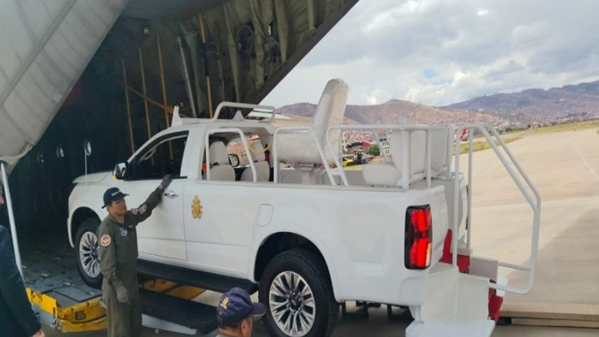

Los pasillos de la casa de reposo de las Hermanitas de los Ancianos Desamparados del Callao guardan historias de adultos mayores llenas de resiliencia, esperanza y una fe tan fuerte como sus ganas de seguir adelante.





Los pasillos de la casa de reposo de las Hermanitas de los Ancianos Desamparados del Callao guardan historias de adultos mayores llenas de resiliencia, esperanza y una fe tan fuerte como sus ganas de seguir adelante.
Lita Pezo participó en la histórica misa que el papa León catorce ofreció este domingo en Pucallpa, en la región Ucayali. Ahora, suma a su trayectoria la experiencia de haber cantado ante el papa León catorce durante su visita a Pucallpa.
El papa León catorce cumple este lunes 16 de noviembre con su última jornada de trabajo luego de haber recorrido Lima, Callao, Lambayeque, Cusco y Ucayali para llevar mensajes de fe y esperanza. Sigue en esta nota el minuto a minuto de todas sus actividades.
Diputados de Juntos por el Perú y Obras blindan a Pedro Castillo de denuncia por caso ascensos en FF.AA. Allegados al expresidente y coprocesados con él se ubican en la planilla dorada del Congreso.
Las puertas se cerrarán a las 8 de la mañana y la misa empezará a las 10. El papa León catorce celebra misa en el Complejo Deportivo Regional de Ucayali, en Pucallpa, Perú, el 15 de noviembre de 2026. Estas son las calles que estarán cerradas hasta las 6 de la tarde en Las Palmas.
Once personas han fallecido y varias han resultado heridas tras un incendio en un edificio de uso residencial y comercial de la turística isla de Phuket, según informaron este lunes las autoridades locales, mientras se investigan las causas.
Durante el período de transición podrán continuar con las opciones anteriores, indicaron desde Open AI. De cara a este cambio, la firma anunció que se incorporarán alternativas para continuar trabajando con esta IA: usar proyectos o integrar complementos a funciones similares a las que ofrecen los GPT personalizados.
El telar de cintura de Yanchalá Ayabaca se posiciona en Europa La artesana de Ayabaca, Fedima Chinchay, muestra su arte en el I Congreso Latino Europeo de Moda y regeneración en España.
Callao: ciudadanos se congregan junto a estatua del papa León catorce ante su visita. Lima Fieles llegan desde temprano a la Base Aérea Las Palmas para la misa del papa León catorce (GALERÍA) Cientos de ciudadanos y devotos católicos ingresan al recinto, ubicado en Surco, a la espera de la celebr.
Cada edición dura menos de dos minutos. En la web tienes el resumen de cada historia y el enlace directo al medio original para leerla completa.
Conoce Olfatecho →